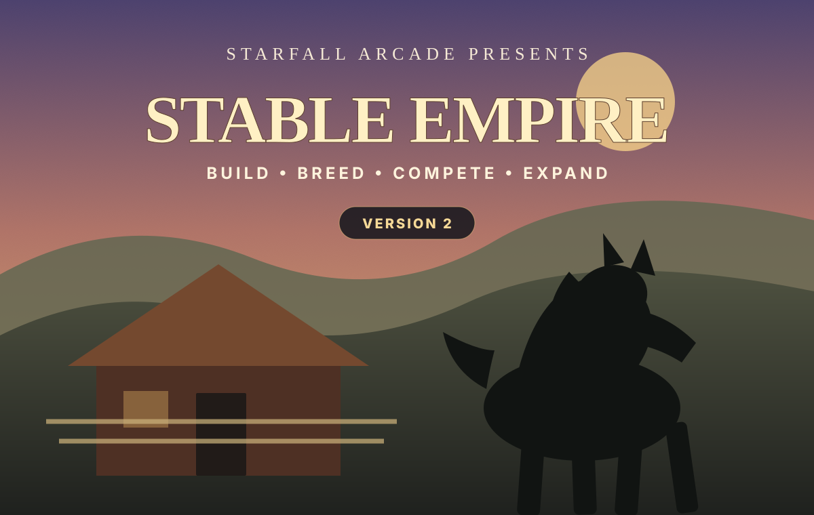

FEATURED GAMELIVESimulationManagementWestern
Stable Empire
Build the stable. Raise the bloodline. Grow the empire.
Starfall Arcade is a growing home for original browser games — a place to play, follow development, discover new projects, and join the community around them.

FEATURED GAMEBuild the stable. Raise the bloodline. Grow the empire.
Stable Empire is only the beginning. The library is already built to expand as new games are announced.
Future Starfall Arcade projects will stay intentionally hidden until they have something worth showing. No fake release dates, no empty promises — just a growing space ready for the next game.
Release notes, platform changes, community plans, and previews from across Starfall Arcade.
Instead of scattering every game across disconnected pages, Starfall Arcade gives them one shared identity, game library, update history, roadmap, and community destination.
The public roadmap separates what is live, what comes next, and what is still only planned.
Discord will become the main place for announcements, bug reports, suggestions, testing, screenshots, development previews, and future events.
The site is prepared for optional supporter features later — cosmetics, recognition, early previews, testing access, or ad-free options — while keeping core gameplay fair.
Read the supporter philosophy →